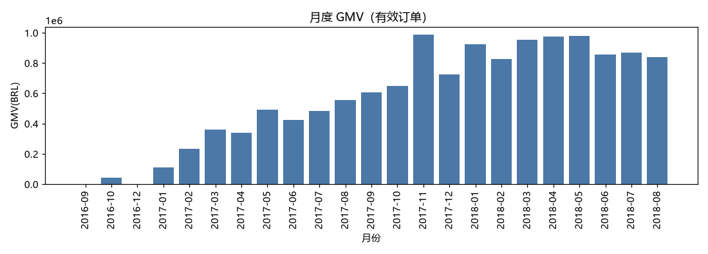
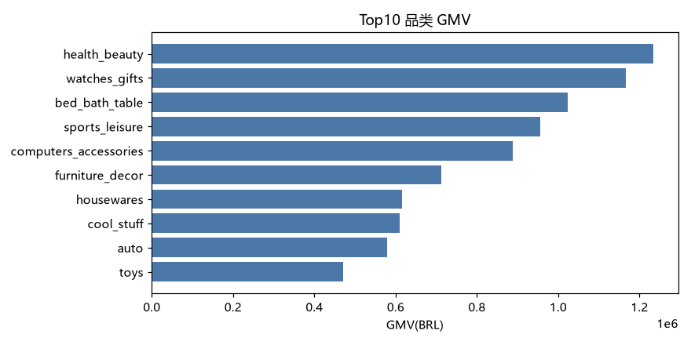
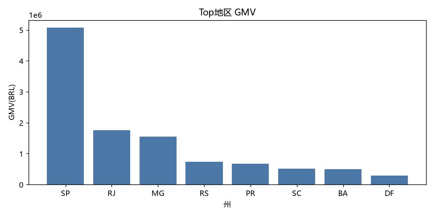
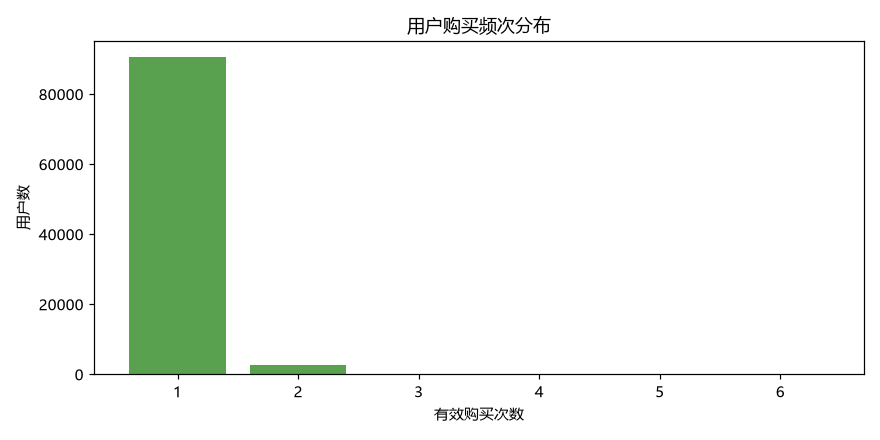
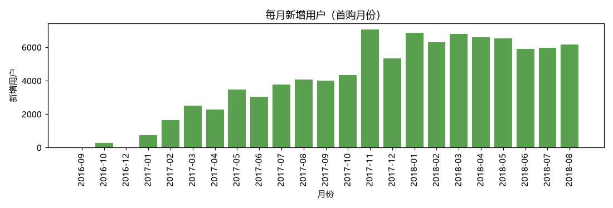
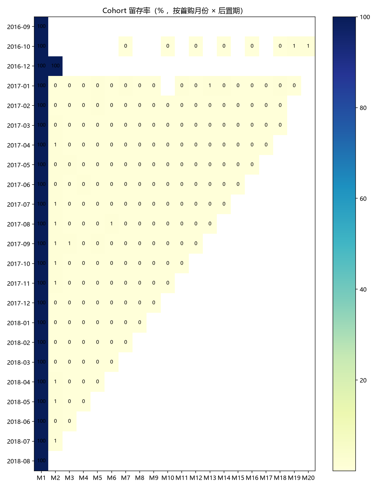
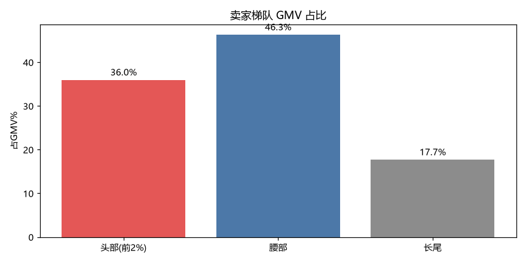
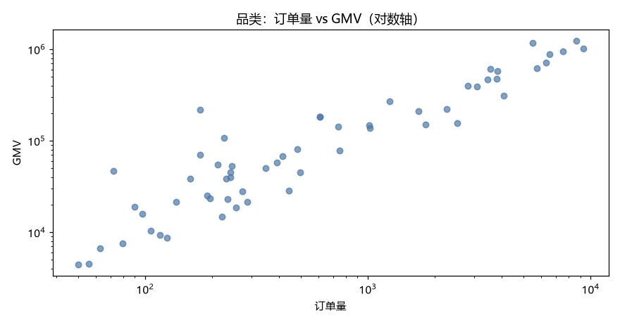
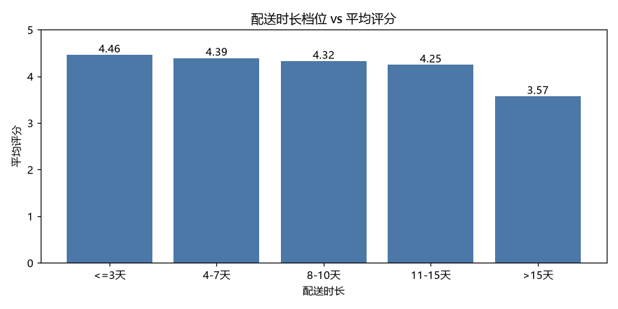
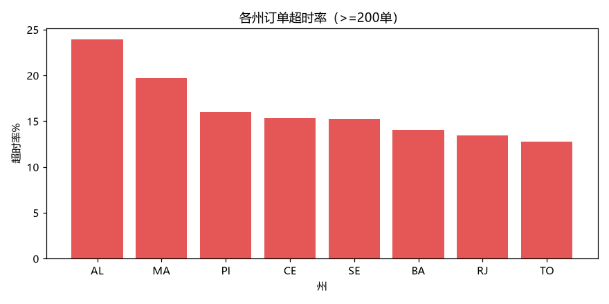

总 GMV（商品价，不含运费）
1322 万
BRL
有效订单
96,478
delivered
客单价 AOV
137.04
GMV/有效订单
注册用户
96,096
去重 unique_id
卖家 / 商品
3,095 / 32,951
供给侧规模
运费总额
219.8 万
BRL，未计入GMV
月度 GMV 趋势（有效订单）

Top10 品类 GMV

Top地区 GMV

经营判断：GMV 整体呈上升趋势。2017 年中起进入快速增长期。要重点看是否存在"增长依赖新增用户、复购不足"的结构，见 Page 2。
复购率（≥2单/≥1单）
3.00%
极低 → 核心机会
有购买用户 / 复购用户
93,358 / 2,801
复购仅 2801 人
复购间隔
中位29天
平均 79.1 天
只买1次用户
90,557
占购买用户97%
用户购买频次分布

每月新增用户

Cohort 留存率（首购月份 × 后置期）

用户判断：97% 用户只买一次，复购率仅 3%。Cohort 首期留存偏低且随业务扩张持续失血 → 平台是"获客驱动"而非"留存驱动"，翻新客留存是比拉新更划算的抓手。
Top品类
health_beauty / watches
GMV前二
头部卖家(前2%)占 GMV
35.97%
59 家
长尾卖家(80%)占 GMV
17.71%
2376 家
整体平均评分
4.09
差评率 14.61%
卖家梯队 GMV 占比

品类：订单量 vs GMV（对数轴）

供给判断：GMV 高度集中在前 20% 卖家（约 82%），80% 长尾卖家仅贡献 17.7%。品类上"高订单未必高 GMV"分化明显（低价高频 vs 高价低频）。需关注头部依赖与低分高 GMV 卖家风险。
平均 / 中位配送
12.5 / 10 天
已配送 96,470
准时 / 超时率
91.89% / 8.11%
超时 7,826 单
准时均分 / 超时均分
4.30 / 2.57
相差 1.73 分
超时爆发区
AL / MA / PI / CE
超时率 15-24%
配送时长档位 vs 平均评分

各州订单超时率

物流判断：物流与评分强相关——超时单均分 2.57 比准时单 4.30 低了 1.73 分，配送 >15 天评分仅 3.60。北部州（AL/MA/PI/CE）超时率 15-24%、配送 19-24 天，是履约与体验双重重灾区。